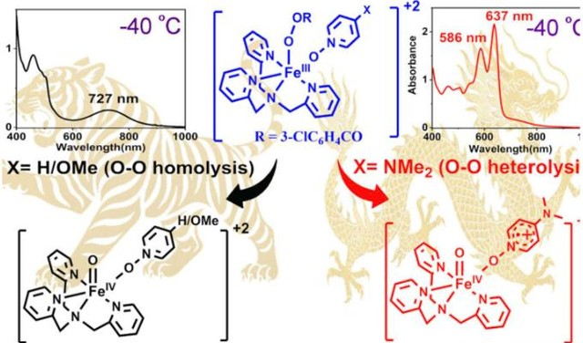
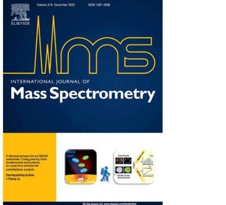
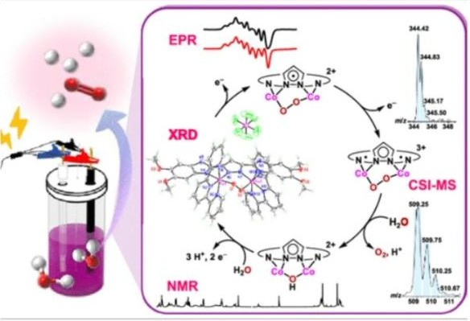
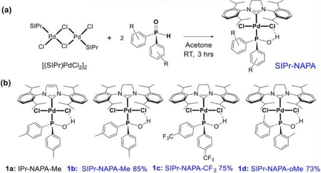
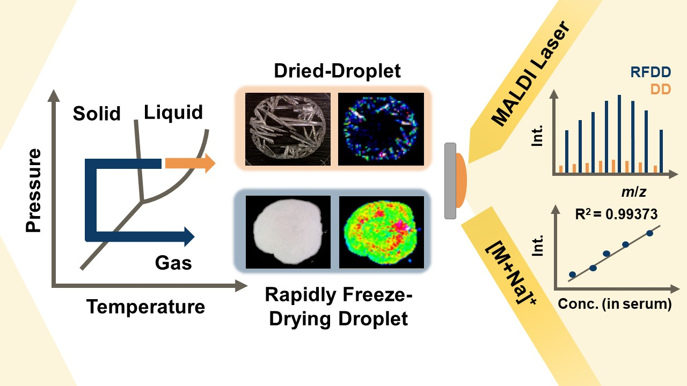
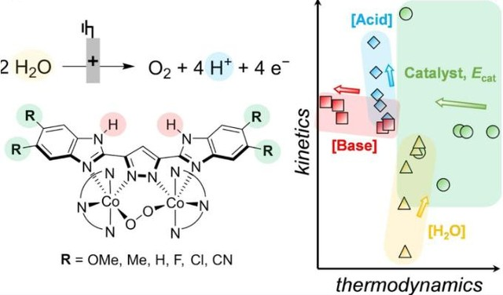

Lu Lab · Department of Chemistry, National Chung Hsing University
Seeing the world other
methods struggle to observe
We begin with a basic question: how are ions actually formed? That understanding becomes measurement capability that reaches real problems, from rapid screening of carbohydrates to smart sorting of plastics and the fleeting intermediates of catalytic cycles.

Research directions
Ionization Mechanisms
Where do MALDI ions actually come from? We measured ion-to-neutral ratios directly and showed that thermal proton transfer, not exotic photochemistry, sets the yield.
Carbohydrate Mass Spectrometry with AI Classification
Making sugars reliably measurable by mass spectrometry, then turning those spectra into machine-learning models aimed at rapid clinical screening.
Smart Plastic Identification for Recycling
Recycling fails at the sorting step. Mass-spectrometric fingerprints plus classification models let mixed plastic streams be identified automatically.
Capturing Reactive Intermediates in Catalysis
Catalytic cycles are usually inferred, not seen. Customized inlets let us capture fleeting intermediates straight out of the reacting solution.
News
- I-Chung Lu received the NCHU Distinguished Professorship (AY 115)
- Congratulations to Chen-Yi Tseng for receiving an NSTC Undergraduate Research Grant
- Congratulations to Chen-Yi Tseng for 2nd place in the 2026 Science and Technology Paper Competition (Chemistry & Sustainable Energy, Undergraduate Division)
- Congratulations to Chen-Yi Tseng for the Paper Award at the 2026 Analytical Technology Symposium
- Congratulations to Shao-Hsun Ho for receiving an NSTC Undergraduate Research Grant
- Congratulations to Shao-Hsun Ho for 2nd place in the 2025 Science and Technology Paper Competition (Chemistry & Sustainable Energy, Undergraduate Division)
- Congratulations to Lyu-Han Lan for the Outstanding Poster Award, ACS Taiwan Chapter
- I-Chung Lu was promoted to Associate Professor
- Congratulations to Yi-Chun Liu for winning 1st place in the 2024 Science and Technology Paper Competition (Chemistry & Sustainable Energy, Undergraduate Division)
- Congratulations to Pin-Rui Tseng for receiving the NSTC Undergraduate Research Creativity Award
- Congratulations to Ding-Chien He for receiving an NSTC Undergraduate Research Grant
- Congratulations to Ding-Chien He for winning 1st place in the 2023 Science and Technology Paper Competition (Undergraduate Division)
- Congratulations to Wan-Qin Zeng for receiving an Honorable Mention in the 2023 Science and Technology Paper Competition (Graduate Division)
- Congratulations to Xin-Wen Zhang for the Outstanding Oral Presentation Award at the 28th Analytical Technology Symposium
- Congratulations to Xin-Wen Zhang for the Outstanding Poster Award at the 18th TSMS Annual Meeting
- Congratulations to Chia-Yun Wang and Pin-Rui Tseng for 3rd place in the NCHU Paper Competition
- Congratulations to Pin-Rui Tseng for receiving an MOST Undergraduate Research Grant
- Congratulations to Chia-Yun Wang for receiving the 2021 Rotary Scholarship
- I-Chung Lu received the NCHU Distinguished Teaching Award
- Congratulations to Wan-Ching Lee for an Honorable Mention in the NCHU College of Science Paper Competition
- Congratulations to Yi-Hsin Chen for an Honorable Mention at the 17th TSMS Annual Meeting
- Congratulations to Chih-Hao Lin for 2nd place in the NCHU College of Science Paper Competition
- Congratulations to Yao-Yu Yang for an Honorable Mention in the NCHU College of Science Paper Competition
- Congratulations to Yi-Hsin Chen for the Best Paper Award at the 8th AOMSC
- Congratulations to Yi-Hsin Chen for 2nd place in the NCHU College of Science Paper Competition
- Laboratory 102 officially opened
Selected publications

para-Donor Effects in PyNO Push Ligands Control O–O Bond Cleavage of TPAFe(III)-Acylperoxo to High-Valent Fe(IV)=O or Fe(IV)=O Radical Cation Species
A thermal perspective on MALDI ionization: A long journey from fundamental mechanisms to a practical solution for carbohydrate analysis
Overcoming the Tradeoff Between Reaction Rate and Overpotential in Dinuclear Cobalt Complex Catalyzed Electrochemical Water Oxidation
Advanced Pd-NAPA Precatalysts for Broad-Scope Kumada–Tamao–Corriu Couplings of Challenging Aryl Chlorides
Advancing Carbohydrate Quantification in MALDI Mass Spectrometry by Rapidly Freeze-Drying Droplet (RFDD) Method
Manipulating the Rate and Overpotential for Electrochemical Water Oxidation: Mechanistic Insights for Cobalt Catalysts Bearing Noninnocent Bis(benzimidazole)pyrazolide LigandsTechnical Platform
We run a customized mass spectrometry platform open to other research groups, for measurements that standard instrument centres cannot make. About the platform →
The group
The lab brings together students working on ionization fundamentals, instrument development, and applied classification problems. Meet the group →
Lab Life
Conferences, outings, and the everyday work of the lab. See lab life →